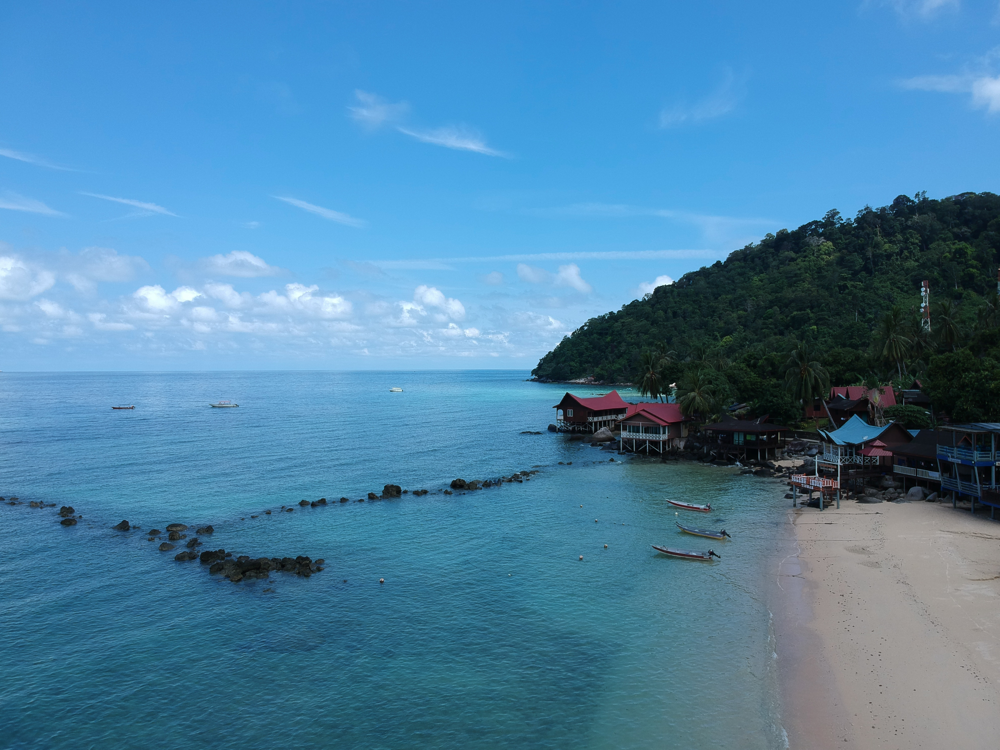
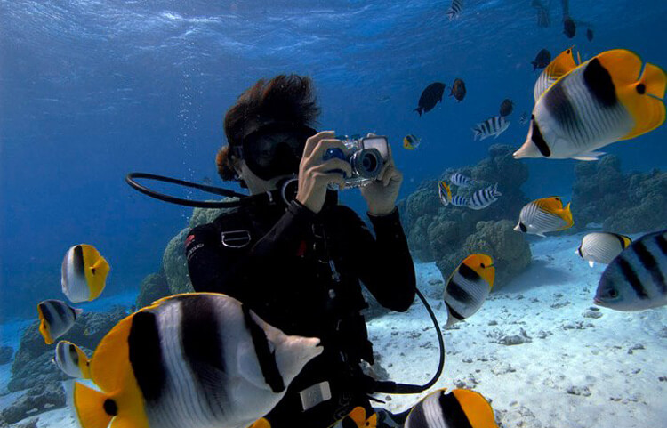

BEACH
Tioman Island is renowned for its stunning beaches. One of the most popular is Long Beach, known for its crystal-clear water and vibrant marine life, making it ideal for snorkeling and diving. The Island's beaches provide a perfect backdrop for relaxation and water activities, making Tioman a true tropical paradise.
ATTRACTION

Tioman Island offer a wide range of tourist attraction besides beautiful beaches and friendly villages. Surrounding Tioman are smaller islands that provide awesome snorkeling in crystal clear waters, looking at coral reefs of different colours, shapes and sizes, as well as a menagerie creatures big and small.
ACTIVITIES
Vibrant coral reefs reside under the sea waters off Tioman and neighbouring islands, as well as wrecks and caverns that attract a tropical variety of marine life, including fish, crustaceans and turtles. snorkeling is the most popular activity, followed by other ppursuits such as diving, beach sports, surfing, duty-free shopping, eating and more.